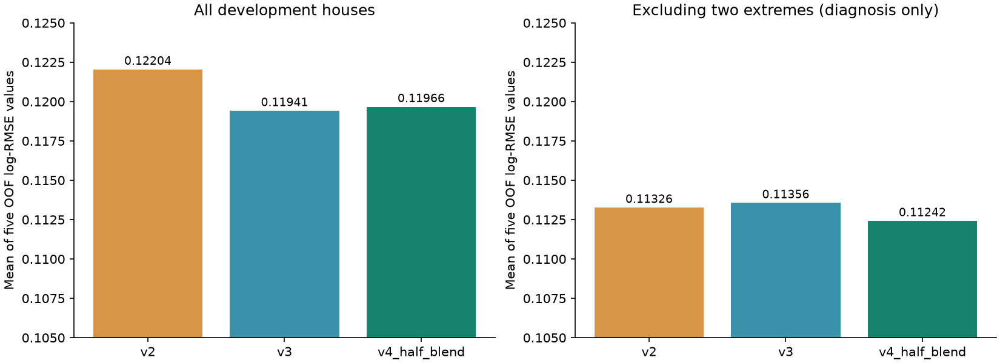

v4：先解释 v3 的退步，再减少单一方案的偏差
用户反馈：v2 = 0.11741，v3 = 0.11770。用户已提交 v4，反馈实测 0.11679，目前为已提交最佳版本。
为什么之前的对比容易误导
原来的五次拆分都使用同一批 1,168 套房屋。v3 对 Id 524、1299 两套极大面积低价房屋的平方误差改善，占净改善的 110.7%；其余房屋合计略有退步。普通成交房屋也略有退步。这能够解释本地指标为什么容易被极少数样本主导，但不能证明测试集退步的具体原因。
下表加入“新线性模型 + 旧树”和“旧线性模型 + 新树”的匹配消融，帮助区分组件影响。剔除两套房屋只用于诊断；主要指标、训练文件、提交文件均没有删除或针对 Id 覆盖任何样本。

| group |
rows |
model |
mean_split_log_rmse |
| all_1168 |
1168 |
v2 |
0.122041 |
| all_1168 |
1168 |
v3 |
0.119411 |
| all_1168 |
1168 |
new_linear_old_cat |
0.120191 |
| all_1168 |
1168 |
old_linear_new_cat |
0.120823 |
| all_1168 |
1168 |
v4_half_blend |
0.119664 |
| without_two_extreme_houses_diagnostic_only |
1166 |
v2 |
0.113262 |
| without_two_extreme_houses_diagnostic_only |
1166 |
v3 |
0.113559 |
| without_two_extreme_houses_diagnostic_only |
1166 |
new_linear_old_cat |
0.113815 |
| without_two_extreme_houses_diagnostic_only |
1166 |
old_linear_new_cat |
0.112650 |
| without_two_extreme_houses_diagnostic_only |
1166 |
v4_half_blend |
0.112416 |
| SaleCondition=Normal |
962 |
v2 |
0.093412 |
| SaleCondition=Normal |
962 |
v3 |
0.094238 |
| SaleCondition=Normal |
962 |
new_linear_old_cat |
0.094763 |
| SaleCondition=Normal |
962 |
old_linear_new_cat |
0.092480 |
| SaleCondition=Normal |
962 |
v4_half_blend |
0.092704 |
逐房屋贡献：CSV；所有拆分及按年份、质量、交易状态的比较：CSV；5,000 次按房屋配对 bootstrap 的 MSE 差区间：JSON。这些均是复用开发集的回顾分析，不能当作新的独立验证。
v4 的提交方法
SalePrice_v4 = exp(0.5 * log(SalePrice_v2) + 0.5 * log(SalePrice_v3))。固定等权融合，保留两版互补部分，不为极小的估算差异细调权重。本轮没有新增训练拟合。
官方排行榜的可见说明明确写着使用全部测试数据。对相同测试集的 log-RMSE，已知两版分数和两版对数预测的均方距离，便可按以下恒等式估算融合分数：
E(w)^2 = (1-w)E2^2 + wE3^2 - w(1-w)mean((log(p2)-log(p3))^2)
取 w=0.5，估算为 0.11679519。若两份反馈分数按五位小数四舍五入，输入舍入对应范围约为 0.11679016–0.11680023。这个范围只是舍入误差界限，不是置信区间，也不是实际提交分数。公式已用有真实标签的开发集逐拆分数值核验。
估算要求两份分数确实对应保存的 v2/v3 文件，且都按相同的完整测试集等权计算 log-RMSE。v4 明确使用线上反馈，不能声称它是完全不看榜单得到的模型改进；没有读取任何单套测试房屋的标签。官网显示若干零分，仅凭分数无法判断其方法，本轮没有使用这些提交或外部答案。
文件与下一轮比较
submission_v4.csv：1459 行，Id 与官方测试集顺序一致，价格正数且有限。SHA-256：6767f59cd9feaaa1b7521341be9fa18c8587b64cd8a0f4e80ee2ec54c4a7a8ad。v1、v2、v3 文件校验值均保持不变。
后续训练先固定少量候选，在外层验证中比较匹配消融，参数只在内层选择；同时报告全样本、普通交易、异常房屋和年份分组结果。需要明确承认这些数据已有多轮使用记录。嵌套验证避免同一分数同时选参数和评价方案的原则，见 scikit-learn 官方说明。
复现：sh scripts/run.sh scripts/optimize_v4.py。方案 · 估算与前提 · 文件校验 · 榜单观察 · 版本记录。